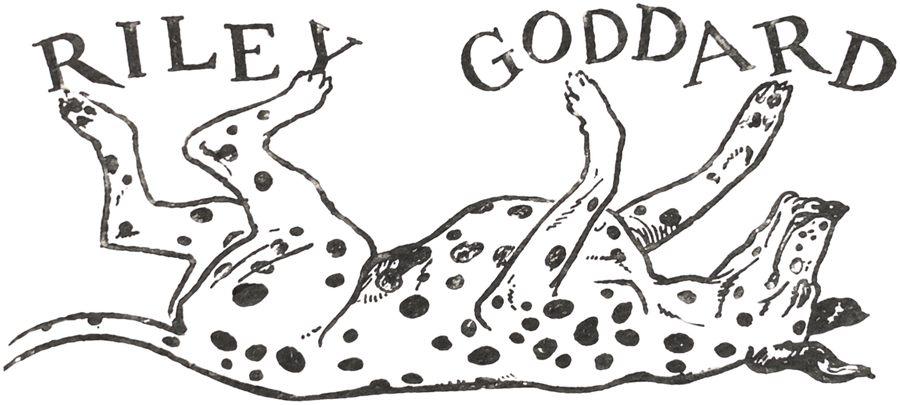

is a London-based content, culture and engagement strategist whose work focuses on integrated narrative, distribution and audience insights across campaign and community-based projects.
Riley strongly believes that creativity without strategy has nothing to say, and strategy without creativity says nothing at all. He holds a BA in Communication (Digital and Social Media; PR and Advertising) from UTS.
Contact:
rileyjasongoddard@gmail.com
Riley is a content, culture and engagement strategist who loves to work on projects at the intersection of design, technology and people.
He knows where, when and how your brand should be in the world. Riley specialises in integrated narrative, distribution and data insights with a focus on how ideas move through culture to cultivate community. He develops audience-led content strategies that strengthen brands, drive engagement and has over three years of experiences working across fashion, tech and the public sector.
University undergraduate degree accredited by Communications and Public Relations Australia (CPRA), officially recognised by Australia’s peak professional industry body.
Services: Performance (Engaging) Creative/Content + Digital Strategy/Production/Events + Partnerships